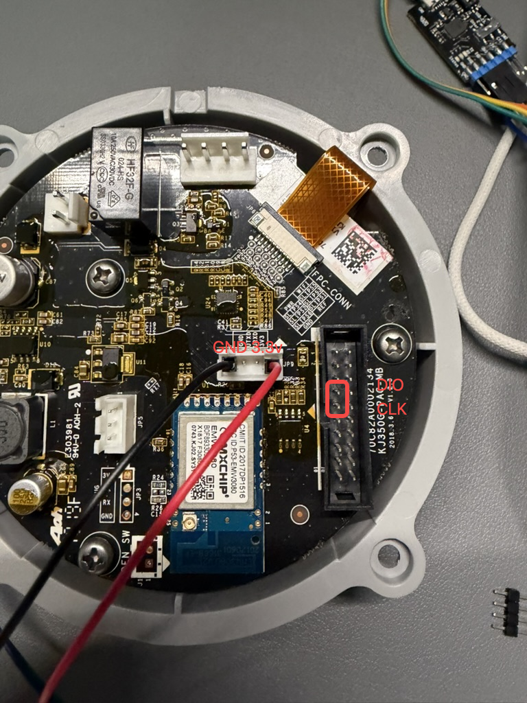

A1 有线安装与恢复
适用于使用原装 EMW3080B / MK3080B 联网模块的 A1。固件只选择 A1 对应文件。需要免拆安装时，见 A1 原厂 OTA 教程。
先阅读刷机前准备，断开市电、原电源及负载，烧录期间使用独立稳定的 3.3V 电源。刷写前保存本机完整 Flash 备份；完整镜像会覆盖 Bootloader、原固件及部分设置。
推荐 J-Link。 A1 的 DIO / CLK 工厂测试点与 JP9 供电点可用杜邦线连接，不需要焊接；也可使用串口 Bootloader。
本文目录
选择刷机方式
- J-Link 刷机：使用调试器通过 SWD 写入。
- Bootloader 刷机：使用 USB-TTL 串口，不需要 J-Link。
| 方式 | 工具与适用情况 |
|---|---|
| J-Link | J-Link + OpenOCD（Windows / Linux）；校验并分段写入完整镜像，适用于首刷和恢复。可使用工厂测试点接杜邦线 |
| 串口 Bootloader | 3.3V USB-TTL + YMODEM 软件；要求原 Bootloader 正常。不需要 J-Link |
| 设备 | J-Link 完整镜像 | 串口镜像准备的输入文件 |
|---|---|---|
| A1 空气净化器 | phicomm_a1.all.bin |
phicomm_a1.ota.bin.raw |
从下载页选择产品并下载固件和 SHA256SUMS，校验通过再操作。.ota.bin / .ota.bin.signed 用于网页签名升级，不能直接当作完整镜像或串口用户应用发送。
J-Link 刷机
A1 工厂测试点：可直接插杜邦线
A1 可使用下图标出的工厂点位，免去在模块焊盘飞线：JP9 的 GND / 3V3 用于供电，DIO / CLK 用于 SWD。图中 JP9 同时有 UART TX/RX，不要把它们误接到 SWD。DIO、CLK 按新版照片的红框定位：以照片方向为准，上方为 DIO，下方为 CLK；杜邦线或排针接触必须牢固。

图中的 VCC 指模块 3.3V，不是原机电源输入。接线前断开原电源和风机；照片中的线色仅供定位，以丝印与信号名为准。
模块 SWD 点位
可在模块对应焊盘焊接导线。下图为模块正向引脚图，按引脚编号确认方向。

| 模块引脚 | 连接 |
|---|---|
| 1 或 3：SWD_CLK | J-Link SWCLK（标准 20 针接口 9） |
| 2 或 4：SWD_DIO | J-Link SWDIO（标准 20 针接口 7） |
| 16：VCC | 独立电源 3.3V，并接 J-Link VTref（标准接口 1） |
| 17：GND | 电源负极与 J-Link GND（标准接口 4）共地 |
VTref 是电压检测输入，不是电源输出。不要连接 J-Link 的 5V 输出。 小型下载器按自身的信号标记接线，不要照搬标准接口针号。J-Link 方式不需要把串口 BOOT 引脚拉低。

准备 OpenOCD 工具与脚本
本节使用 OpenOCD + J-Link（SWD），不需要安装或打开 mlink / mflash。Windows 使用工具包自带的旧版 OpenOCD；Linux 使用 OpenOCD 0.11 / 0.12 和配套的新配置。两者都需要同一份 flash_prog.elf，不能仅安装系统 OpenOCD 后直接运行 program all.bin。
下载并解压到短路径（例如 Windows 的 C:\phicomm、Linux 的 ~/phicomm）：
- EMW3080 脚本包：含 Python 3 校验、切分和烧录脚本，以及新版 OpenOCD 配置。
- zA1 的 3080_JLINK 烧录工具包：保留其中的
openocd/、sflash_write.tcl、flash_prog.elf，将外层目录改名为3080-tool。不要运行包内旧固件或旧批处理。 - 下载对应产品的
.all.bin与同一版本的SHA256SUMS，放到工作目录。不要拿网页签名包或其他产品的文件替代。
目录应如下（脚本包解压在工作目录，不放进 3080-tool）：
phicomm/
emw3080.py
mx1290-modern.cfg
phicomm_a1.all.bin
SHA256SUMS
3080-tool/
flash_prog.elf
sflash_write.tcl
openocd/
win32/openocd_mico.exe
scripts/interface/jlink_swd.cfg
scripts/target/MX1290/...
备份先于写入。 此脚本不提供完整 Flash 备份或原厂恢复；需要保留原厂时，应先通过适用的完整读取工具保存本机备份。旧工具包自带的 sflash_read_file 存在参数和外部命令问题，不能直接当作跨平台备份命令。连接检查只识别调试接口，不写 Flash；烧录命令会覆盖 Bootloader、内核、应用及 ATE。
Windows：安装、检查与烧录
- 安装 Python 3（3.9 或更新版本），确认
py -3 --version可用。 - OpenOCD 通过 libusb 访问 J-Link。若已能识别 J-Link，无需更换驱动；若出现
LIBUSB_ERROR_NOT_SUPPORTED，按 OpenOCD Windows 说明，使用 Zadig 只为 J-Link 安装 WinUSB 驱动。切换后，SEGGER 软件可能需要恢复原驱动才能使用。 - 断电接好 SWD、VTref、共地与独立 3.3V 电源，接通模块电源，关闭占用 J-Link 的其他软件。在 PowerShell 中进入工作目录，先检查连接：
cd C:\phicomm
py -3 .\emw3080.py check --tool-dir .\3080-tool --engine legacy
应看到 Vref 约为 3.3V、SWD ID 和 MX1290.cpu，命令正常退出。连接失败先排查接线、供电和驱动。
确认是 A1 后执行：
py -3 .\emw3080.py flash .\phicomm_a1.all.bin --model a1 --checksums .\SHA256SUMS --tool-dir .\3080-tool --engine legacy
Linux：安装、检查与烧录
Debian / Ubuntu 安装系统工具：
sudo apt update
sudo apt install openocd python3
openocd --version
cd ~/phicomm
python3 emw3080.py check --tool-dir ./3080-tool --engine modern
使用 OpenOCD 0.11 / 0.12。此模式加载脚本包中的 mx1290-modern.cfg，不要替换成旧包的 MX1290.cfg。若报 USB 权限错误，检查发行版的 OpenOCD udev 规则及其用户组权限；重新登录并拔插 J-Link 后再试。其他 Linux 发行版安装同名软件包及相应 USB 规则。
A1 空气净化器烧录：
python3 emw3080.py flash phicomm_a1.all.bin --model a1 --checksums SHA256SUMS --tool-dir ./3080-tool --engine modern
如 OpenOCD 不在 PATH，可追加 --openocd /绝对路径/openocd。Linux 配置已适配新版 DAP 接口；本教程的 Linux 流程尚未完成实机烧录验证，连接通过并不等于写入和启动已验证。
切分文件与烧录校验
flash 在访问 J-Link 前校验发布 SHA256、产品、镜像边界、应用 CRC 和内嵌原始 OTA MD5，再自动切分写入。校验失败会退出，不尝试擦除；只接受本项目当前布局的 .all.bin。原工具文件也会校验，防止混用其他板子的 Flash 编程器。
若只需切分、不连接设备，可执行（Windows 将 python3 换成 py -3）：
python3 emw3080.py split phicomm_a1.all.bin --model a1 --checksums SHA256SUMS --output firmware
输出目录必须不存在，脚本不会覆盖已有文件。
| 输出 | 完整镜像内的范围（结束地址不包含） | 烧录分区 ID | 分区内偏移 |
|---|---|---|---|
boot.bin |
0x000000～0x012000（72 KiB） |
1 |
0x0 |
ota.bin |
0x013000～0x0C8000（724 KiB，含填充） |
2 |
0x0 |
ate.bin |
0x0D0000～文件末尾（最多 256 KiB） |
3 |
0x0 |
切分后的 ota.bin 仅供此 SWD 流程使用，不能上传到网页升级。0x012000～0x013000 和参数区 0x0C8000～0x0D0000 不在这三段的写入范围内。分区 ID 与原始 Flash 地址不是一回事，不要把命令中的三个 0x0 改为 0x13000 或 0xD0000。
底层依次执行以下命令，使用编程器的按需擦除和写后校验，不做整片擦除：
sflash_write_file firmware/boot.bin 1 0x0 MK3080B 0
sflash_write_file firmware/ota.bin 2 0x0 MK3080B 0
sflash_write_file firmware/ate.bin 3 0x0 MK3080B 0
reset run
shutdown
实际 flash 使用临时目录，运行结束后自动清理。每段写入必须持续返回 Result: OK，最后正常退出。Verify after write failed、Error during Write 或非零退出都表示失败，应保持供电稳定、修复连接后重新写入。Result: OK 只证明编程器写后校验通过，随后仍要按文末步骤检查正常启动、配网与设备功能。
| 问题 | 处理 |
|---|---|
找不到 flash_prog.elf / 工具包校验失败 |
确认 --tool-dir 指向原包根目录，保留配套文件，不使用其他板型 ELF |
target requires -dap |
新版 OpenOCD 使用 --engine modern，保留配套 mx1290-modern.cfg |
couldn't bind to socket |
脚本已使用 23333 / 24444 / 26666；仍报错时检查占用或 Windows 保留端口（netsh interface ipv4 show excludedportrange protocol=tcp） |
旧版报 Named pipes currently not supported |
使用数字端口，不要把旧版 gdb_port 改成 disabled |
| 已校验但无配网热点 | 断电后拆除下载线并恢复原接线，正常上电；核对产品文件，必要时收集启动日志，不要整片擦除试错 |
Bootloader 刷机
不需要 J-Link；准备支持 3.3V 电平、921600 波特率的 USB-TTL、独立 3.3V 电源和支持 YMODEM 的串口软件。烧录期间断开原电源和风机。
模块点位与进入下载模式

| 模块引脚 | 连接 |
|---|---|
| 16：VCC | 独立电源 3.3V |
| 17：GND | 电源负极和 USB-TTL GND 共地 |
| 9：用户 UART TX | USB-TTL RX |
| 10：用户 UART RX | USB-TTL TX |
| 19：BOOT | 下载时接 GND，完成后解除 |
用户串口 TX/RX 交叉连接，不是日志串口。若主板其他控制器仍在驱动模块 RX，应先隔离该端输出，避免两个 TX 争用。烧录期间断开原电源和风机。
断电接线并把 BOOT 拉低，串口设 921600、8N1、无流控，再上电；看到 MXCHIP> 提示后继续。没有提示先检查供电、共地、TX/RX 和 BOOT，不要盲发擦写命令。
以下方法保留原 Bootloader，仅适用于菜单和分区与下文一致的设备；不同布局不能照搬。
1. 确认菜单与分区
按准备页接线与供电要求进入 Bootloader。选择 USB-TTL 对应的串口，设置 921600、8N1、无软硬件流控。
输入 ? 确认菜单：
1:FWUPDATE Update MiCO
2:USERUPDATE Update user APP
5:MEMORYMAP
6:BOOT
输入 5，核对以下关键分区。地址是 Flash 偏移，不是 CPU 映射地址：
| ID | 分区 | 起始地址 | 长度 |
|---|---|---|---|
| 2 | Bootloader | 0x00000000 |
0x00013000 |
| 3 | MiCO Kernel | 0x00013000 |
0x000b5000 |
| 6 | User Application | 0x00088000 |
0x00040000 |
| 7 | PARAMETER1 | 0x000c8000 |
0x00004000 |
| 8 | 参数备份（菜单同样显示 PARAMETER1） | 0x000cc000 |
0x00004000 |
MiCO 区域包含用户应用，应用相对 MiCO 起点的偏移为 0x75000。若菜单或布局不同，停止本流程。
本方法不写 Bootloader、参数、ATE、OTA Storage 和 USER Storage；但覆盖内核或应用仍会替换原固件，不能以保留这些区域代替原厂备份。
2. 准备串口镜像
下载对应产品的固件与同一 Release 中的 SHA256SUMS，校验所用文件。下列脚本已固定 model = 'a1'。
不要将
.all.bin发送给1或2，也不要将未经转换的 OTA 文件发送给2。.all.bin含 Bootloader 等区域，只用于完整地址烧录流程。
A1 的原始 .ota.bin.raw 的结构为：内核及填充 0x75000 字节 + 用户应用 + 末尾 16 字节 MD5。
- 串口
FWUPDATE使用去掉 MD5 尾部后的连续内核与应用数据。 USERUPDATE使用带 8 字节长度/CRC 头的.usr.bin。
可从校验通过的 .ota.bin.raw 提取串口文件；不要对带签名封装的网页升级包直接执行提取。下面在固件所在目录运行，检查长度、MD5、应用魔数、ABI 和 CRC 后才生成两个串口文件：
python3 - <<'PY'
from pathlib import Path
import binascii
import hashlib
import struct
model = 'a1'
image = Path(f'phicomm_{model}.ota.bin.raw').read_bytes()
offset = 0x75000
assert offset + 144 <= len(image) <= offset + 0x40000 + 16, '镜像长度异常'
assert hashlib.md5(image[:-16]).digest() == image[-16:], 'OTA MD5 不符'
length, reserved, crc, magic, stack, abi = struct.unpack_from('<IHHIII', image, offset)
assert 120 <= length <= 0x40000 - 8, '应用长度异常'
assert len(image) == offset + 8 + length + 16, '应用边界异常'
assert magic == 0xc89346 and abi == 3, '应用魔数或 ABI 不符'
user = image[offset:-16]
assert reserved == crc == binascii.crc_hqx(user[8:], 0), '应用 CRC 不符'
product = f'PHICOMM_{model.upper()}_EMW3080'.encode() + b'\0'
assert product in user, '镜像产品与所选型号不符'
Path('fw.serial.bin').write_bytes(image[:-16])
Path('user.serial.bin').write_bytes(user)
print('内核+应用:', len(image) - 16, 'bytes')
print('用户应用:', len(user), 'bytes; SHA256:', hashlib.sha256(user).hexdigest())
PY
生成后记录脚本输出的文件长度，发送完成时核对设备显示的 Size。文件长度与校验值随固件变化，请使用所下载文件的实际结果。
3. 发送与回读
-
在
MXCHIP>输入1并回车，等待Waiting for the file to be sent/C，使用 YMODEM（CRC、1 KiB 数据包）发送fw.serial.bin。建议使用支持包间隔的发送工具，将数据包间隔设为 50 ms。写入是否正确仍需通过回读校验确认。 -
等待设备打印
Successfully!，核对Size。
该提示只代表 Bootloader 报告接收/写入完成，不能据此宣布应用可启动。
- 输入
2 -r，使用串口工具的 Receive YMODEM 接收用户分区，保存为USER.bin。回读文件应为整个0x40000分区，即 262144 bytes。
Linux 脚本需要独占串口时，先用 Ctrl-A、Q 退出 minicom，再运行脚本；不要让两个程序同时读写同一端口。
- 将回读文件前
user.serial.bin长度的内容与期望应用逐字节比较，同时验证应用 CRC：
```sh python3 - <<'PY' from pathlib import Path import binascii import hashlib import struct
expected = Path('user.serial.bin').read_bytes() readback = Path('USER.bin').read_bytes() assert len(readback) == 0x40000, '用户分区回读长度不符' actual = readback[:len(expected)] assert actual == expected, '应用回读不一致，不要启动；重新写入并回读' length, reserved, crc = struct.unpack_from('<IHH', actual) assert length + 8 == len(actual), '应用长度不符' assert reserved == crc == binascii.crc_hqx(actual[8:], 0), '应用 CRC 不符' print('应用逐字节一致，CRC 通过，SHA256:', hashlib.sha256(actual).hexdigest()) PY ```
- 确认回读一致后输入
6启动。正常断电重启前解除 BOOT 接地，按准备页要求恢复原接线。
4. 应用 CRC 失败时恢复
user firmware invalid [-3] 表示用户应用 CRC 校验失败。按以下步骤恢复：
- 进入 Bootloader，核对固件校验和，并重新准备同一固件的应用文件。
- 输入
2，通过 YMODEM 发送user.serial.bin；也可使用已与提取结果核对一致的对应产品.usr.bin。设置数据包间隔为 50 ms。 - 等待
Successfully!，再执行2 -r，按照上文脚本比较回读内容。 - 回读不一致时，检查供电、共地、导线、串口占用及 USB-TTL 转换器，排除问题后重新写入。保持 Bootloader 和参数分区，不要通过整片擦除来试错。
- 回读与应用文件完全一致后，输入
6启动。
5. 判断应用是否运行
恢复原接线，检查 A1 配网热点、网页、风机与面板状态。
完成与配网
A1 上电前请装好滤芯。 滤芯位置有联锁开关，未安装滤芯可能导致整机无法通电。刷机后若看起来没有反应，请先检查滤芯是否装到位、联锁开关是否正常触发。来源：zA1 Issue #3。
- 断电，解除 BOOT 接地（串口方式），移除下载线。
- 恢复原接线并装回外壳后，再接原电源正常上电。
- 连接
A1-AP-<MAC后六位>，访问http://192.168.0.1/配网。 - 核对设备型号和网络状态。检查风机、灯环和面板。需要 MQTT 时填写 Broker 并确认连接。
模块点位与串口流程参考庆科 EMW3080 系列模组固件烧录方法。